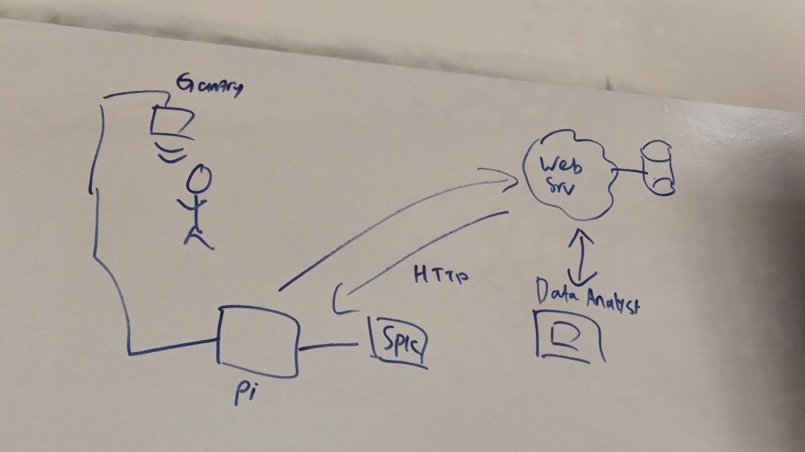
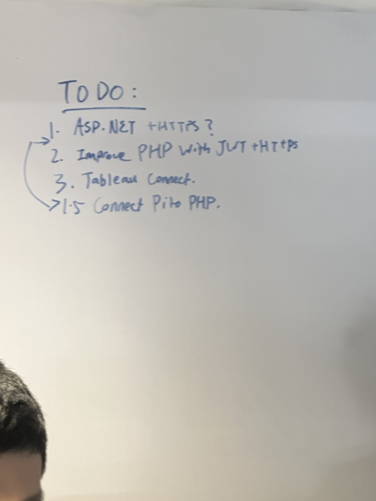

Project Start
Week 1
I am in Group 2 for this module. The main idea for this project is for an employee to clock into work without needing to clock in manually. It would include a keycard that will be automatically scanned as the employee walks past the detector. There will be a facial recognition system as a failsafe. This also can function as an automatic payroll calculator, and can also double as a security system to detect who walks in and out of the building. Initially I thought of something similar to the anti-theft systems that shops have. However, it isnt possible due to the fact that we need the big scanner, and it would be out of budget. This week was mainly used for research. Python would be the main programming language used for this project.
Project Planning Part 1
Week 2

This week, we first started off with making a rough UML diagram on how each component is connected to what.(refer to the image) As seem from the image, there will be a core component and a few sub components on how the entire system is going to work. Reader scans the keycard, passes data to Raspberry Pi, Raspberry Pi stores data in MSSQL. Raspberry Pi also connects to a speaker that announce the name of the employee clocking in. As can be seen from the diagram, a camera will also be used in tandam with the scanner. It will make use of facial recognition to scan the employees walking in. This part is less refined as we are not sure if the RaspberryPi can handle the machine learning for the facial recognition. That is all for this week. (also inception deck xd)
Role Assignment
Week 3


Week 3 was spent delagating roles for each person in the group. I chose to do the text to speech Python speaker. Some problems that I immediately could think of was that the Raspberry PI OS would have different problems compared to windows and might need extra libraries. The first thing I found was gTTS (google text to speech) API. It would create a sound file to be played. This would then bring another problem, in which there will be too many sound files created if many people keep walking though the gantry. A way to play the sound file and getting rid of it after it is played will be required. The speed at which the Text to Speech plays will also need to be quick. Overall, I more or less understand what problems I might be facing. That is all for this week.
Text to speech speaker
Week 4


This week, I had to work on the text to speech speaker module. I had already previously done a prototype for the TTS module, so I already knew what to do. However, I soon encountered a bunch of errors such as the file not being found. I also had to use a WAV file instead of a MP3 file as requested by the Product Owner. Pydub and FFmpeg was installed in addition to gTTS. An input was added to the function that contains the text that the TTS will speak. After not figuring out why the test wasnt passing, I restarted my computer and then it worked. What I liked was that I made a prototype first so that I would know how the code would work, and could debug the code relatively quicker than if I did not play with the code. That is all for this week.
Week Of Hackathon(3 parts)
Week 5
Day 1 : Started the day by looking through my previous code and re testing to see if it worked. I helped out my group mates for the rest of the day.
Day 2: Started off the day by working on the inception deck. There were sudden changes during the late afternoon where we had to make a Structure diagram. The inception deck also had to change as initially we did not want to include facial recognition but ultimately decided to.
Day 3: We had to present our project to the sponser. Some feedback gained was that there should be more emphasis on what is being done with the data that is being collected
Discussion
Week 12
This week, we started planning on what to do moving forward. However, the team did not meet this week so not much was done, therefore, have a cat image for this week
Web Application
Week 13
This week, I helped my groupmate Damian with the web application. The home page had not been made yet so we started working on that. I also plan on fixing some of the issues with the login page, as the textbox does not align with the background. We also came up with a list of what to do as shown above.
Web Application 2
Week 14

This week, we met online as usual to discuss what needed to be changed. The web application has a few main functions. There is a login page in which you enter your username and password, and it brings you to the main page, where you can access the create and search functions. This is all made with a MVC(model view controller). the search and create will be linked to the gantry, in which it can register or delete a person from the database that the gantry is taking data from. Image above is a small snippet of code that is part of the website.
Web Application 3
Week 15

Today I helped my groupmate Damian with the web application do the edit and update. The errors I encountered was that my database did not work properly, so i could not launch the program to test my code. This was an error in the time ShiftIn and ShiftOut not being in the 24 hour format. Anyway, I referred to my previous work in year 2 sem 1 practical, which had shown how to add the edit and update functions to the website. image was a list of things to do that week.
PFD web application
Week 16

This week, we continuted working on the web application. The page had to be changed to change the search function to turn it into a dropdown list to reveal update and edit buttons. The same change was made to the Shift and Record pages, as the first button linked to the Employee database. The footer is broken and does not stick to the bottom, though that might be because the background image is too large.